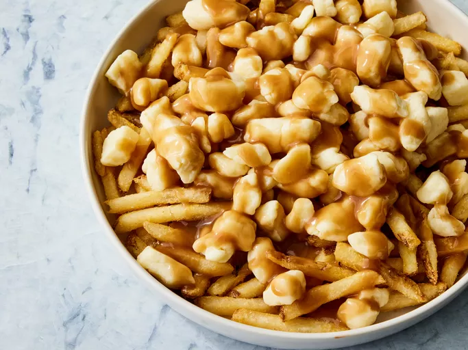

Poutine (the food)

Description
Poutine, which was invented in Quebec in the 1950s, is a Canadian dish composed of fries topped with cheese curds and hot gravy. "Poutine" is a Quebecois slang word that means "mess."
Ingredients
- Oil: You'll need a quart of vegetable oil for frying.
- Gravy: Use a store-bought can of beef gravy or make your own at home.
- Fries: Russet potatoes work well for French fries, as they're extra starchy.
- Cheese curds: Cheese curds are key for authentic poutine. However, if you like, you can use shredded mozzarella cheese.
Steps
- Heat the oil to 365 degrees F.
- Warm the gravy on the stove or in the microwave.
- Fry the French fries and drain on paper towels.
- Place the fries on a serving platter, then top with curds and warm gravy.